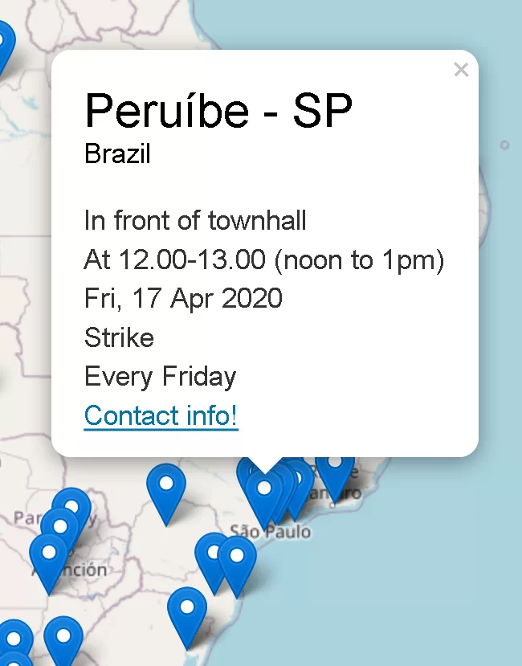
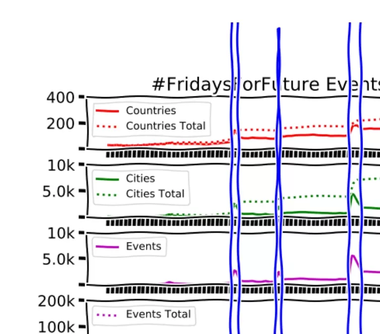

- > Find all strikes and actions on this global Map!
- > Click on the pin to find time and place for the strike, and, if they have indicated a contact, contact details for the organizer of that strike.
- > If you go to the Map and look top left under All countries, you can select any country in the drop-down list and find the local strikes and actions.
- > You can also select Future, Past, All or particular dates for strikes, and whether to include all groups or select one.

MAP
STRIKE STATISTICS
Here is the success of Fridays for Future, FFF. In just over a year, from one solitary school striking girl, Greta Thunberg, to one of the biggest manifestations of all time.
History is written here.

REGISTER & REPORT STRIKES
The more who strike, the more power for change.
Start striking and let us know, so we can show that engagement is growing.
Because it is.
If striking in public is not safe, here are some alternatives.
MAP
Find all strikes and actions on this global Map!